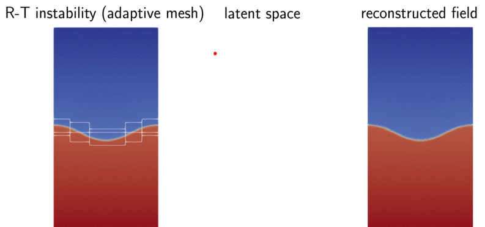
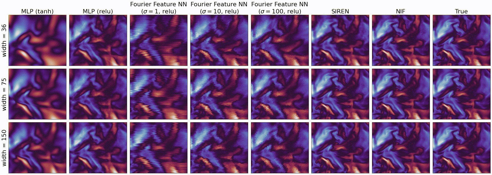

Neural Implicit Flow (NIF): mesh-agnostic dimensionality reduction



NIF is a mesh-agnostic dimensionality reduction paradigm for parametric spatial temporal fields. For decades, dimensionality reduction (e.g., proper orthogonal decomposition, convolutional autoencoders) has been the very first step in reduced-order modeling of any large-scale spatial-temporal dynamics.
Unfortunately, these frameworks are either not extendable to realistic industry scenario, e.g., adaptive mesh refinement, or cannot preceed nonlinear operations without resorting to lossy interpolation on a uniform grid. Details can be found in our paper.
NIF is built on top of Keras, in order to minimize user’s efforts in using the code and maximize the existing functionality in Keras.
Highlights

Built on top of Tensorflow 2.x with Keras model subclassing, hassle-free for many up-to-date advanced concepts and features
from nif import NIF # set up the configurations, loading dataset, etc... model_ori = NIF(...) model_opt = model_ori.build() model_opt.compile(optimizer, loss='mse') model_opt.fit(...) model_opt.predict(...)
Distributed learning: data parallelism across multiple GPUs on a single node
enable_multi_gpu = True cm = tf.distribute.MirroredStrategy().scope() if enable_multi_gpu else contextlib.nullcontext() with cm: # ... model.fit(...) # ...
Flexible training schedule: e.g., first some standard optimizer (e.g., Adam) then fine-tunning with L-BFGS
from nif.optimizers import TFPLBFGS # load previous model new_model_ori = NIF(cfg_shape_net, cfg_parameter_net, mixed_policy) new_model.load_weights(...) # prepare the dataset data_feature = ... # data_label = ... # # fine tune with L-BFGS loss_fun = tf.keras.losses.MeanSquaredError() fine_tuner = TFPLBFGS(new_model, loss_fun, data_feature, data_label, display_epoch=10) fine_tuner.minimize(rounds=200, max_iter=1000) new_model.save_weights("./fine-tuned/ckpt")
Templates for many useful customized callbacks
# setting up the model # ... # - tensorboard tensorboard_callback = tf.keras.callbacks.TensorBoard(log_dir="./tb-logs", update_freq='epoch') # - printing, model save checkpoints etc. class LossAndErrorPrintingCallback(tf.keras.callbacks.Callback): # .... # - learning rate schedule def scheduler(epoch, lr): if epoch < 1000: return lr else: return 1e-4 scheduler_callback = tf.keras.callbacks.LearningRateScheduler(scheduler) # - collecting callbacks into model.fit(...) callbacks = [tensorboard_callback, LossAndErrorPrintingCallback(), scheduler_callback] model_opt.fit(train_dataset, epochs=nepoch, batch_size=batch_size, shuffle=False, verbose=0, callbacks=callbacks)
Simple extraction of subnetworks
model_ori = NIF(...) # .... # extract latent space encoder network model_p_to_lr = model_ori.model_p_to_lr() lr_pred = model_p_to_lr.predict(...) # extract latent-to-weight network: from latent representation to weights and biase of shapenet model_lr_to_w = model_ori.model_lr_to_w() w_pred = model_lr_to_w.predict(...) # extract shapenet: inputs are weights and spatial coordinates, output is the field of interests model_x_to_u_given_w = model_ori.model_x_to_u_given_w() u_pred = model_x_to_u_given_w.predict(...)
Get input-output Jacobian or Hessian.
model = ... # your keras.Model x = ... # your dataset # define both the indices of target and source x_index = [0,1,2,3] y_index = [0,1,2,3,4] # wrap up keras.Model using JacobianLayer from nif.layers import JacobianLayer y_and_dydx_layer = JacobianLayer(model, y_index, x_index) y, dydx = y_and_dydx_layer(x) model_with_jacobian = Model([x], [y, dydx]) # wrap up keras.Model using HessianLayer from nif.layers import HessianLayer y_and_dydx_and_dy2dx2_layer = HessianLayer(model, y_index, x_index) y, dydx, dy2dx2 = y_and_dydx_and_dy2dx2_layer(x) model_with_jacobian_and_hessian = Model([x], [y, dydx, dy2dx2])
Data normalization for multi-scale problem
just simply feed
n_para: number of parameters,n_x: input dimension of shapenet,n_target: output dimension of shapenet, andraw_data: numpy array with shape =(number of pointwise data points, number of features, target, coordinates, etc.)
from nif.data import PointWiseData data_n, mean, std = PointWiseData.minmax_normalize(raw_data=data, n_para=1, n_x=3, n_target=1)
Large-scale training with tfrecord converter
all you need is to prepare a BIG npz file that contains all the point-wise data
.get_tfr_meta_datasetwill read all files under the searched directory that ends with.tfrecord
from nif.data.tfr_dataset import TFRDataset fh = TFRDataset(n_feature=4, n_target=3) # generating tfrecord files from a single big npz file (say gigabytes) fh.create_from_npz(...) # prepare some model model = ... model.compile(...) # obtaining a meta dataset meta_dataset = fh.get_tfr_meta_dataset(...) # start sub-dataset-batching for batch_file in meta_dataset: batch_dataset = fh.gen_dataset_from_batch_file(batch_file, batch_size) model.fit(...)
Save and load models (via Checkpoints only)
# save the config model.save_config("config.json") # save the weights model.save_weights("./saved_weights/ckpt-{}/ckpt".format(epoch)") # load the config with open("config.json", "r") as f: config = json.load(f) model_ori = nif.NIF(**config) model = model_ori.model() # load the weights model.load_weights("./saved_weights/ckpt-999/ckpt")
Network pruning and quantization
Google Colab Tutorial
Hello world! A simple fitting on 1D travelling wave

learn how to use class
nif.NIFmodel checkpoints/restoration
mixed precision training
L-BFGS fine tuning
Tackling multi-scale data
learn how to use class
nif.NIFMultiScaledemonstrate the effectiveness of learning high frequency data
Learning linear representation
learn how to use class
nif.NIFMultiScaleLastLayerParameterizeddemonstrate on a (shortened) flow over a cylinder case from an AMR solver
Getting input-output derivatives is super easy
learn how to use
nif.layers.JacobianLayer,nif.layers.HessianLayer
Scaling to hundreds of GB data
learn how to use
nif.data.tfr_dataset.TFRDatasetto createtfrecordfromnpzlearn how to perform sub-dataset-batch training with
model.fit
Revisit NIF on multi-scale data with regularization
learn how to use L1 or L2 regularization for weights and bias in ParameterNet.
a demonstration for the failure of NIF-Multiscale in terms of increasing spatial interpolation when dealing with high-frequency signal.
this means you need to be cautious about increasing spatial sampling resolution when dealing with high-frequency signal.
learn that L2 or L1 regularization does not seem to help resolving the above issue.
NIF Compression
learn how to use low magnititute pruning and quantization to compress ParameterNet
Revisit NIF on multi-scale data: Sobolov training helps removing spurious signals
learn how to use
nif.layers.JacobianLayerto perform Sobolov traininglearn how to monitor different loss terms using customized Keras metrics
learn that feeding derivative information to the system help resolve the super-resolution issue
Requirements
matplotlib
numpy
tensorflow_probability==0.18.0
tensorflow_model_optimization==0.7.3
Issues, bugs, requests, ideas
Use the issues tracker to report bugs.
How to cite
If you find NIF is helpful to you, you can cite our JMLR paper in the following bibtex format
@article{JMLR:v24:22-0365,
author = {Shaowu Pan and Steven L. Brunton and J. Nathan Kutz},
title = {Neural Implicit Flow: a mesh-agnostic dimensionality reduction paradigm of spatio-temporal data},
journal = {Journal of Machine Learning Research},
year = {2023},
volume = {24},
number = {41},
pages = {1--60},
url = {http://jmlr.org/papers/v24/22-0365.html}
}